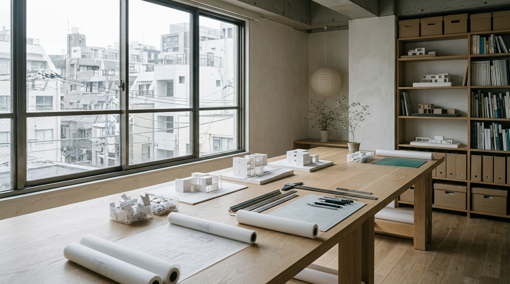

I光の回路
中庭と天窓を平面の中心に置き、光を建築の奥まで通します。壁に当たった光は反射して別の部屋へ回り、朝と夕で明るくなる部屋が入れ替わります。照明をつけない時間が、一日のうちで最も長くなるように。
建築設計事務所 — 東京・神保町
住宅、公共の建築、展示空間を、光・風・人の動線がひとめぐりして戻ってくる「回路」として設計しています。行き止まりのない平面から、朝と夕で別の表情を持つ部屋まで。神保町の小さな事務所から、土地と使う人に寄り添う建築を描きます。
01SELECTED WORKS
住宅・公共・展示の5作品。写真を選ぶと、平面図・断面図・仕様が見られます。
02PHILOSOPHY
光・風・人。三つの流れが途切れないことを、私たちは設計の出発点にしています。
中庭と天窓を平面の中心に置き、光を建築の奥まで通します。壁に当たった光は反射して別の部屋へ回り、朝と夕で明るくなる部屋が入れ替わります。照明をつけない時間が、一日のうちで最も長くなるように。
開口を風上と風下、低い位置と高い位置に組み合わせ、中庭で空気が上昇する仕組みをつくります。機械に頼らず、季節の風が部屋の間をめぐります。
行き止まりの部屋をつくらず、動線を環につなぎます。行きと帰りで別の景色を通り、部屋の使われ方も一日のうちに移り変わります。
KAIRO FILM 01 — 0:08
神保町しおりホールの朝。ルーバーが刻む光の縞が、床から壁へとゆっくり移ります。音のない8秒間を、壁面の時間軸として繰り返します。
03STUDIO PROFILE
古書店と印刷所の並ぶ街の3階。白い模型とスケール定規に囲まれて、8名で設計をしています。

回路建築設計事務所は2012年、神保町に設立しました。古書店と印刷所の並ぶ街の3階に構えたアトリエでは、8名の建築士がひとつのヒノキの作業台を囲んでいます。設計はまず手で触れる模型から始め、光の入り方を部分模型で確かめながら図面に移します。住宅の新築・改修から公共建築、展示空間の計画まで、規模を問わず同じ「回路」の考え方で設計しています。
〒101-0051 東京都千代田区神保町1-2-3 神保町ビル3F
神保町駅（都営三田線・新宿線、東京メトロ半蔵門線）徒歩3分
御茶ノ水駅・新御茶ノ水駅 徒歩8分／九段下駅 徒歩9分
ご来所の際は、事前にご連絡ください。
04CONTACT
新築、改修、小さな造作まで。まずは願いを聞かせてください。
回路建築設計事務所〒101-0051 東京都千代田区神保町1-2-3 神保町ビル3F
2営業日以内に、ご入力のメールアドレスへご連絡します。以下は送信内容の控えです。